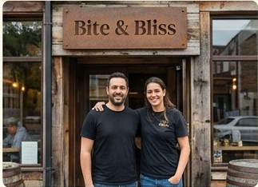

Our Story

Our journey started back in 2016 with a simple dream: to create a space where food lovers could gather and enjoy authentic, freshly prepared meals made with real passion. What began as a small family kitchen has grown into a beloved dining destination, built on a foundation of quality, warmth, and culinary tradition.
We believe that ....
We believe that great food does more than just satisfy hunger—it brings people together and creates lasting connections. Every recipe on our menu is thoughtfully crafted using handpicked ingredients, traditional recipes, and a pinch of modern flavor to ensure every visit feels like coming home.